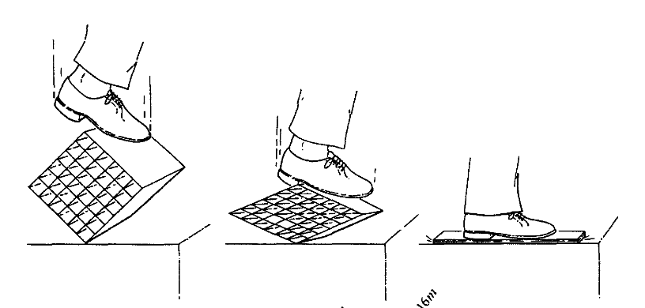

The purpose of this post is to review the principles behind Einstein’s famous gravitational equation \[R_{ij}-R g_{ij}=\kappa T_{ij}.\] We do not develop any analytic or mathematical properties of the equation, but rather indicate it’s history and motivation. Recall that:
- \((R_{ij})\) is the Ricci quadratic tensor,
- \(R\) is the trace of \((R_{ij})\),
- \(g_{ij}\) is the Lorentzian metric,
- \(T_{ij}\) is the so-called “energy momentum tensor”, and
- \(\kappa\) is an absolute constant.
Tensors and Einstein’s Point-Coincidence Argument
Einstein’s famous GR field equation is a tensor equation, and we recall the historical motivation behind this choice traditionally known as the point coincidence argument (PCA). The point-coincidence argument appears well known to historians of GR, arising from Einstein’s confused “hole argument” and the material meaning of coordinates. This argument however is the key heuristic by which Einstein arrived at tensor equations as the formal basis for his general relativity theory. The following quotation is Einstein’s and is taken from (Norton 1993):
“The general laws of nature are to be expressed by equations which hold good for all systems of coordinates, that is, are covariant with respect to any substitutions whatever (generally covariant). It is clear that a physical theory which satisfies this postulate will also be suitable for the general postulate of relativity. For the sum of all substitutions in any case includes those which correspond to all relative motions of three-dimensional systems of coordinates. \(\ldots\)
That this requirement of general covariance, which takes away from space and time the last remnant of physical objectivity, is a natural one, will be seen from the following reflexion. All our space-time verifications invariably amount to a determination of space-time coincidences. If, for example, events consisted merely in the motion of material points, then ultimately nothing would be observable but the meetings of two or more of these points. Moreover, the results of our measurings are nothing but verifications of such meetings of the material points of our measuring instruments with other material points, coincidences between the hands of a clock and points on the clock dial, and observed point-events happening at the same place and the same time.
The introduction of a system of reference serves no other purpose than to facilitate the description of the totality of such coincidences. We allot to the universe four space-time variables \(x_0, x_1, x_2, x_3\) in such a way that for every point-event there is a corresponding system of values of the variables \(x_0, x_1, x_2, x_3\). To two coincident point-events there corresponds one system of values of the variables \(x_0, x_1, x_2, x_3\), i.e. coincidence is characterized by the identity of the coordinates. If, in the place of the variables \(x_0, x_1, x_2, x_3\) we introduce functions of them, \(x'_0, x'_1, x'_2, x'_3\), as a new system of coordinates, so that the system of values are made to correspond to one another without ambiguity, the equality of all four coordinates in the new system will also serve as an expression for the space-time coincidence of the two point-events. As all our physical experience can be ultimately reduced to such coincidences, there is no immediate reason for preferring certain systems of coordinates to others, that is to say, we arrive at the requirement of general covariance.”
Covariant Tensors and Invariant Divisors
Einstein was much influenced by the absolute differential tensor calculus of Ricci, Grossmann, Levi-Civita, and especially the fundamental local property of tensors that (Levi-Civita, n.d., sec. IV.12):
- [T]he vanishing of a tensor (i.e. all its elements) is an invariant property, and which holds in general for any change of variables of any kind. In other words, if all the elements of a generic tensor \(A_{i_1, i_2, \ldots}^{j_1, j_2, \ldots}\) referred to a particular system of variables are zero, we may be sure that the equations \(A_{i_1, i_2, \ldots}^{j_1, j_2, \ldots}=0\) continue to hold however the variables may be changed.
It follows that tensors are covariant objects whose zeros and poles (called “divisors” by algebraic geometers) are topologically invariant subsets of the manifold. But again we must emphasize that the components and coefficients of a tensor are not invariant. According to Einstein’s PCA, we find covariant and contravariant tensors are the only valid objects of the GR theory.
The canonical tensor element in Einstein’s GR is the Lorentz quadratic form \(g=ds^2\). The volume form \(det(g_{ij})^{1/n}\) is another important tensor canonically associated with \(g\). According to the fundamental property of tensors, the zeros and poles of \(g\), \(det(g_{ij})^{1/n}\) are also invariant.
Coordinate versus Physical versus Curvature Singularities:
Now regarding the common terminology of “coordinate singularities” versus “physical singularity” (or more accurately “curvature singularity”), we make the following observation. The so-called coordinate singularity represents the locus of points where \(det(g_{ij})=0\), and here \(det\) represents the full four-dimensional determinant of the Lorentz metric \((g_{ij})\). But \(g\) and \(det(g)\) are well-defined tensors, so only their zero locus and poles is coordinate independant and “physical” according to Einstein’s PCA.
For example in spherical coordinates \((r, \theta)\) on the usual Euclidean space \(\bf{R}^2\), the Riemannian metric has volume form \(\det(g)= r dr \wedge d\theta\). But this form vanishes at \(r=0\). Therefore we would argue that this zero is invariant with respect to diffeomorphisms.
By contrast, there is a rather ridiculous image in Misner-Thorne-Wheeler’s textbook “Gravitation” (Thorne, Wheeler, and Misner 2000). In our view their “mere” coordinate singularity is a bonafide singularity, being formed by the external force of the boot! It seems evident to us that a boot crushing a coordinate system is a physical singularity.

MTW’s viewpoint leads to their introduction of “carets” and their so-called “geometrodynamic” approach, which approach we find unncessessary and not as rigorous as claimed.
Vacuum Equation
Now we consider Einstein’s field equations. The vacuum equation (absence of matter) has the form \[Ric -R g =0.\] All the quantities \(Ric\), \(R\), \(g\), and \(Ric-Rg\) are tensorial. Therefore their values are not invariantly defined, but their zeros and poles are invariantly defined. Notice that \(g=(g_{ij})\) is the unknown in the field equations, while \(Ric\) and \(R\) depend nonlinearly on \(g\).
\(\newcommand{\del}{\partial}\)
We pause to make trivial but important observation. The classical expression for particle velocities, namely \(\frac{\del x_1}{\del x_0}\) are not tensorial, and therefore not independant of the system of coordinates. Here \(x_0\) is assumed to correspond to “time”. But neither is the contravariant derivative \(\nabla_{\frac{\del}{\del x_0}} \frac{\del}{\del x_1}\) an invariant object in the theory. The contravariant derivative returns a tensor, and therefore only it’s zeros and poles constitute a coordinate-independant quantity in the theory. This makes the discussion of “velocities” always dependant on the chosen coordinate system, and only vanishing velocities \(\nabla=0\) (or diverging to \(+\infty\)) are invariantly defined. Likewise if \(\gamma\) is a smooth curve in \(X\), then the covariant “acceleration” evaluated as \(\nabla_{\gamma'} \gamma'\) is again tensorial, and therefore only its divisors are invariant. For example in special relativity, we have the Lorentzian line element \(ds\) which is a Lorentz invariant tensor. Therefore \(\delta \int ds=0\) is invariant equation for timelike curves \(ds^2>0\).
Matter Equations: Is the Stress-Energy Tensor Defined?
What about Einstein’s field equations in the presence of matter? In the presence of matter, Einstein’s field equations has a nontrivial right hand term, namely \[Ric - Rg= \kappa T_{ij}\] where \(\kappa\) is said to be a constant of proportionality and \(T=(T_{ij})\) is the stress-energy tensor. The field equations in the presence of matter raise two objections.
The constant of proportionality \(\kappa\) is arguably not a proper object of tensor calculus, unless it is absolutely constant. But if constant, then it has no meaning since it’s absorbed into the tensor vector \("\kappa T = T"\). Typically the purpose of \(\kappa\) is to “dimensionally” align the physical units of the left- and right-hand sides of the field equation. But this raises the question, not without it’s own controversy, of “What are the units of the left-hand terms \(Ric\) and \(Rg\)?”
Is \(T=(T_{ij})\) properly defined as a tensor object? By convention \(T\) is assumed to represent all the matter-energy in the spacetime. And in special cases, Einstein establishes formulas for \(T\). Yet do all these examples determine \(T\) as a tensor?
Regarding our second objection, we agree that Einstein provided expressions for the stress-energy in certain coordinate systems for various systems. But how does one formula for the tensor in a coordinate system provide the definition of a tensor for all coordinate systems?
The issues are more subtle than they might first appear…
Units, \(ds^2\), and Proper Time
The previous section introduced the field equations, tensors, PCA, and raised some questions about physical units in the theory. Here we continue the discussion about units, but now focussing on the quadratic line element \[g=ds^2=-c^2dt^2+dx^2+dy^2+dz^2.\]
In previous posts we have warned readers from naively applying Riemannian ideas to Lorentzian metrics. It cannot be overemphasized that Lorentzian metrics are not Riemannian. When a Riemannian geometer starts working with Lorentz metrics, they naturally want to use the line element \(ds':=\sqrt{-ds^2}\) on timelike curves. They are inclined therefore to refer to integrals \(\int_\gamma ds'\) as “lengths” along the curves \(\gamma\). But again we warn the reader against taking this interpretation literally, for the reverse triangle inequality proves the “Lorentz distance” is not a Riemannian distance at all! This sounds trivial, but is actually nontrivial.
Related to the Lorentz metric is the so-called “proper time” function on timelike curves, usually represented by a definition type formula \(ds'=c d\tau\). But we ultimately find this “definition” to not be a definition of “time” at all, because we ask the question: “What are the physical units of \(d\tau\) ?”
As strange as it first sounds, we believe it’s a significant mistake to believe \(d\tau\) has physical units of time. The fundamental problem is again that \(ds'\) is emphatically not a measure of metric distance. This is because we must contrast the Pythagorean theorem involving sum of squares and which is inherently Riemannian, with the difference of squares defining the Lorentzian measure.
In euclidean geometry, the squareroot of a sum of orthogonal squares represents a length because of Pythagorean identity. There are right angled triangles to be constructed whose hypotenuses are the lengths in question. However the squareroot of a sum of signed squares is not readily identified as a length to the Pythagorean, even if one assumes the squares are orthogonal. There are no right angled triangles to draw except on the null cone \(ds^2=0\) where the Pythagorean \[c^2 dt^2=dx^2+dy^2+dz^2\] is equivalently the hypothesis on the velocity of \(c\) in vacuum. However outside the null cone the Pythagoreans need to reasion cautiously, especially inside the null cone along the timelike curves.
We acknowledge the temptation of interpreting \(\sqrt{-ds^2}\) as a length element along timelike curves. We ask these seemingly pedantic question to clarify whether the supposed identity \[ds':=\sqrt{-ds^2}=c d\tau\] provides a definition of the so-called “proper time” \(d\tau\), and does \(ds'\) really have units of \([length]\)? Does \(d\tau\) have units of \([time]\)?
Let us include a frequent argument in the general relativity, alleging to establish the identity \(ds'=c d\tau\), where \(d\tau\) represents the so-called “proper time” of an inertial observer as measured by their local “clock”. This interpretation comes from the use of a so-called “instantaneous rest frame”. This requires the observer to find coordinates \((\tau, \xi, \eta, \zeta)\) where \(\tau\) represents “time” and all the partial derivatives vanish
\[\frac{\del \xi}{\del \tau}=\frac{\del \eta}{\del \tau}=\frac{\del \zeta}{\del \tau}=0.\]
In this particular coordinate system one finds \(ds^2=-c^2d\tau^2\) and \(ds'=\sqrt{-ds^2}=c d\tau\).
But can we really conclude that \(ds'\) has units of \([length]\) as a general rule, or equivalently that \(ds'/c\) has units of \([time]\) based on a computation in one coordinate system? Observe that the system of equations is not tensorial since the partial derivatives \(\del \xi/ \del \tau\) are not covariant.
Curiel’s Arguments
Our discussions are much influenced by the writings of J.D. Norton and E. Curiel.
Curiel has alot to say about GR and especially the energy tensor. In fact, nobody poses the question better than Curiel: “Is energy even defined in GR?”. And it’s a serious question.
Curiel makes the argument that the Einstein tensor \(Ric - Rg\) is the variation of Gauss curvature, therefore the gravitational energy tensor must depend solely on the Riemannian curvature tensor. But this essentially recovers Einstein’s original critique against Grossman and Levi-Civita’s suggestion that the Einstein tensor itself represents the gravitational energy tensor! For Einstein objected that such a definition would render the total energy of any closed system equal to zero. Curiel documents the rather confusing state-of-affairs involved in attempting to defined gravitational energy tensor and it’s role in Einstein’s field equations.
[Incomplete]
Carets and Non Tensors
The mere coordinate singularities, so named by MTW, leads to the introduction of “geometrodynamics” and “carets” in the GR. For example, an introduction to these ideas are discussed in (Klauber 2001) and briefly in (Thorne, Wheeler, and Misner 2000).
The caret argument is that despite the components of the tensors being not invariantly defined, the projections of the components on a “local Lorentz frame” are well-defined and physical relative to the local frame. Taking projections, they claim the results of tensor equations can be compared to laboratory measurements.
This idea of taking projections in a local Lorentz frame is curious, and though perhaps intuitively appealing, the mathematics is not clear.
In our view there is no canonical local Lorentz frame. And even given a frame, there is no well-defined projection from the tensors onto the frame. In practice, they take a projection by dividing and renormalizing “component wise”, but this appears to be ad hoc and only convenient when the metric is diagonal. Besides, they don’t seem aware of the fundamental property of tensors that their “components” are in no sense canonical. By analogy, in euclidean geometry, there is no canonical choice of orthogonal basis. Projections onto the coordinate axes will all be different, and the only invariant quantity is the sum of squares. That is the essence of Pythagoras: that the sum of squares is the only invariant quantity that can be measured by different choices of orthogonal bases. Likewise for Lorentz frames: it is only the Lorentz line element which is invariant. All other projections are noninvariant and non contravariant.
But again, most mathematicians/physicists are not persuaded by these critiques. And indeed the projection onto coordinates axes seems to be inspired by projections in quantum mechanics. In the Born-Dirac interpretation, the projections amount to “observations”. The carets attempts to develop a parallel idea in GR. Many will disagree here, but it depends on the answer to the question: Who taught you GR and how were you taught? There appears to be no large-scale consensus anyway, though we welcome any comments to the contrary.
The following paragraph is a good idea which is still very early in development.
From Einstein Topological PCA to Probabilistic Gromov-Mendel
For Einstein, the only objective reality is the topological coincidence of points. This is the motivation for his seeking tensor equations, wherein the zeros \(a_{ij}=0\) are invariant with respect to change of variable, as the basis for a general theory of gravitation. For example, the left hand side of Einstein’s field equations \[R_{ij}-R g_{ij}=\kappa T_{ij}\] is evidently a tensor quantity, since the Ricci tensor \(Ric=(R_{ij})\) is indeed tensorial, as is its trace \(R\) (scalar curvature).
In our research [ref] we investigate a probabilistic formulation of Einstein’s PCA, which is much closer to Gromov’s category of finite probability spaces. In this work, we replace “tensor equations” – which in our mind are much too idealized objects over the real numbers \(\bf{R}\) – with stochastic “frequency equations”.
Idea: the basic tensor expression \[d\xi=\frac{\partial \xi}{\partial x_1} dx_1+\cdots + \frac{\partial \xi}{\partial x_n} dx_n\] has a probabilistic interpretation when we replace \(d\xi\) with the time-rate \(d\xi/dt\). Compare Gromov’s paper on Mendel (Gromov 2007) where tensors and distributions are also identified.